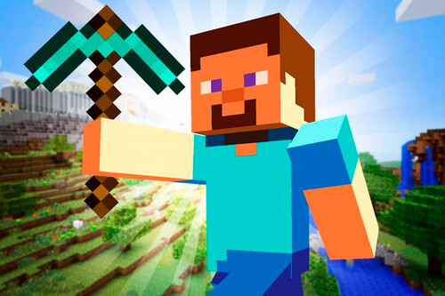
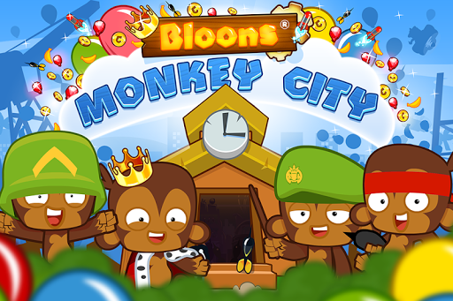
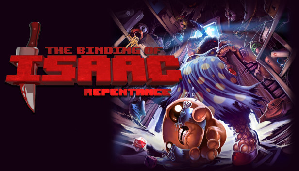
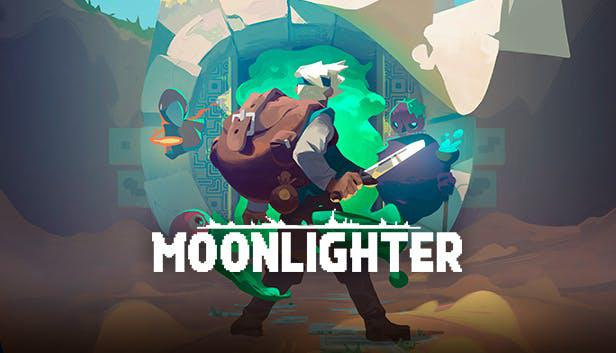

No tengo mucho para decir de este juego porque lo conoce todo el mundo literalmente,
lo pongo en el top porque lo habré jugado mas de 10 mil horas a lo largo de mi vida asi que se lo merece,
igual hace mucho no lo juego porque no me anda.
Sin lugar a duda el mejor sandbox 3D de todos los tiempos, y eso es mucho decir...

En el cuarto lugar tenemos el mejor juego del genero SimCity. Con la premisa de fundar una ciudad
de monos, los cuáles estan en guerra con los monos desde tiempos inmemoriales y sin razón aparente,
con el objetivo de tener más y mejores monos para poder reventar más y mejores globos. Lo bueno de
este juego es que me anda en la compu, aparte no te aburre porque el terreno para expandir es
gigante y hay una banda de monos.

En el tercer puesto tenemos el The Binding of Isaac, se trata de un roguelike
en el que tenemos que escapar por el subsuelo de nuestra mamá la cuál es fanática religiosa que se le safó la tuerca y esta re sacada y nos quiere matar. En el camino vamos
encontrando items que mejoran diversas características, una de las más destacadas son nuestras lágrimas, las cuales son nuestras armas para defendernos de los bichos que rondan
en el sótano de la casa de Isaac, sotano que por alguna razon es gigantesco, más grande que la propia casa del Isaac. Lo bueno de este juego es que me anda en la compu (por eso
me puse a hacer páginas asi puedo facturar y comprar una compu que me corra el isaac) aparte le metieron 500 actualizaciones con 800 mil cosas.

En el segundo lugar tenemos un auténtico juegaso, una joyita papá, me había olvidado de su
existencia pero gracias a la creación de este intento de página pude recordarlo. Es un juego
de mazmorras satelital, corte The Binding of Isaac, pero con la diferencia que cada partida
afecta en tu progreso porque las cosas que recoges en cada salida cuando volves podes venderlas
en tu kiosko y ganar plata.
Lo bueno de este juego es que me anda en la compu, aparte no te aburre por que hay 500 millones de cosas
para recolectar y vender.

En el primer puesto como no, el mejor juego de supervivencia 2D de mundo abierto.
Muchos erróneamente lo comparan con Minecraft pero esto es una falasia, debido a que el contenido
de terraria es abismalmente mayor, sumado a muchas otras diferencias más.
Lo bueno de este juego es que me anda en la compu, aparte no te aburre por mas que
hayas jugado 500 partidas debido al alto nivel de contenido del que dispone.
Sin más que decir, el mejor juego que existe, por lo menos de acá a unos meses hasta
que me aburra.